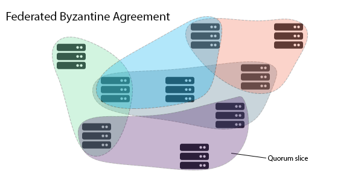

TrstConsensus Spec
Fault Tolerance
Since our protocol ensures Byzatine Agreement, it solves the consensus problem for a system of N nodes, where we can say N = 3f + 1, for any positive integer f, therefore guaranteeing safety and liveness, as long as at the maxiumum, the f nodes are faulty.
Open Membership
FBA is special because it works with an open membership, meaning different nodes can have completely different ideas about which nodes they trust, and what their quorum needs. This closely represents human systems of trust, and was therefore chosen.
A quorum has to be a non-empty set of nodes that contain atleast one quorum slice for each of the non-faulty nodes.

Safety and Liveness Guarantees
If all of the nodes choose the same quorum slice, then FBA is just Byzatine Agreement, as a mechanism that ensures agreement amongst all the non-faulty nodes in the system. When the nodes each choose their own quorum slices, safety may only be guaranteed for a subset of them. Safety is dependent on quorum overlap, but is now an individual property instead of a system-wide property. A FBA system can only guarantee agreement between two different nodes in the system, in case every quorum containing node 1 and every quorum containing node 2, intersect for atleast one non-faulty node.
FBA also guarantees liveness under eventual synchrony for sets of nodes, where where safety is guaranteed.
Combining with Leader Election
On top of the federated voting, that has been described in the previous set of sections too, there exists a leader election system, such that the system can narrow down on a few or one suggestion to the replicated state machine. Without this, every node may suggest a different value for the slot, and because of our liveness guarantees, the nodes will keep moving to the next round, however making very little practical progress by agreeing to decisions. On the other hand, Federated Voting confirms a nominated change, by the leaders chosen by the leader election, with reasonable confidence that nodes for which security is guaranteed will never confirm contradictory statements.
Stages of obtaining Consensus
-
Pre-commit phase : Predliminary declaration of votes. -
- Can't vote on a ballot without preparing the transaction (n,x) and dropping (n', x')
-
Individual Acceptance -
- Accept and broadcast to the other nodes that the individual acceptance has occured.
- Broadcast to all it's nodes about details ( in quorum slice )
-
Ratification : Nodes vote to accept a common update. -
- If more than quorum inside the quorum slice has been achieved, accept.
- If not correct, check if quorum achieved on any of the other data
- broadcast to all it's nodes about details of accepted transaction
- Finally, verify that transaction has been accepted in the other nodes.
- Broadcast :
-
- Make the updated ledger and broadcast amongst all the nodes.